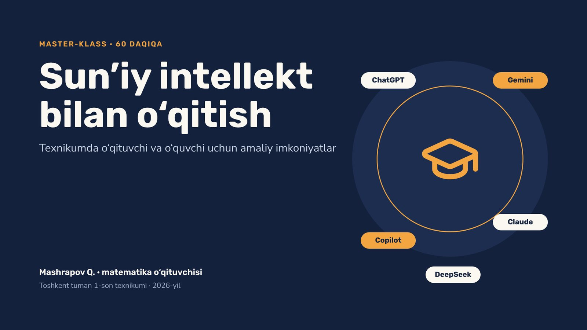

AI work
Sun’iy intellekt bilan o‘qitish: texnikum o‘qituvchilari uchun 60 daqiqalik master-klass. Slaydlarni shu yerda ko‘ring, izohlarni o‘qing va barcha materiallarni bepul yuklab oling.
38 slayd60 daqiqaToshkent tuman 1-son texnikumiMuallif: Mashrapov Q.2026-yil noyabr

Yuklab olish
PPTXTaqdimot — PowerPoint38 slayd, izohlar bilan · 5.8 MB
PDFTaqdimot — PDFProyektor yoki telefon uchun · 393 KB
DOCXMa’ruzachi matniHar slayd: vaqt va nima deyish kerak · 46 KB
DOCXVideo ssenariyHar slayd uchun rolik matni va Gemini promptlari · 40 KB
DOCXUch qahramon: video promptlari37 ta tayyor Gemini (Veo) prompti · 39 KB
TXTVideo promptlari — matnTelefonda nusxalash uchun qulay · 21 KB
Manbalar
- Gallup — AI ishlatgan o‘qituvchilar haftasiga 5,9 soat tejaydi (2025)
- Hechinger Report — Harvard AI-repetitor tadqiqoti
- Jahon banki — Nigeriyada AI bilan ingliz tili (2025)
- OpenAI — Dota 2 (2017)
- OpenAI Five (Wikipedia)
- aileaders.uz — «Besh million AI yetakchisi» platformasi
- kun.uz — 5 million AI mutaxassisi rejasi (2025)
- kun.uz — 2030-yilgacha top-50 AI davlati maqsadi
- gov.uz — maktablarda AI ta’limi (2026)
- gov.uz — «Bir million dasturchi» natijasi
- Yangi O‘zbekiston universiteti — AI ta’limi islohoti
- IT Park — «AI Leaders 2026» dasturi
- TechCrunch — ChatGPT bepul foydalanuvchilarga cheklanmagan matn (2026)
- AI Toolbox — Gemini limitlari (2026)
- Data Studios — Claude bepul tarif limitlari
- Elephas — NotebookLM limitlari (2026)
Ma’lumotlar 2026-yil noyabr holatiga ko‘ra tekshirilgan. AI limitlari va narxlari tez o‘zgaradi. Materiallardan dars va master-klasslarda bemalol foydalaning.